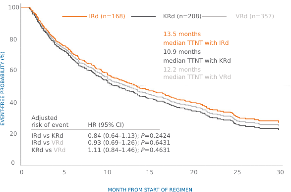
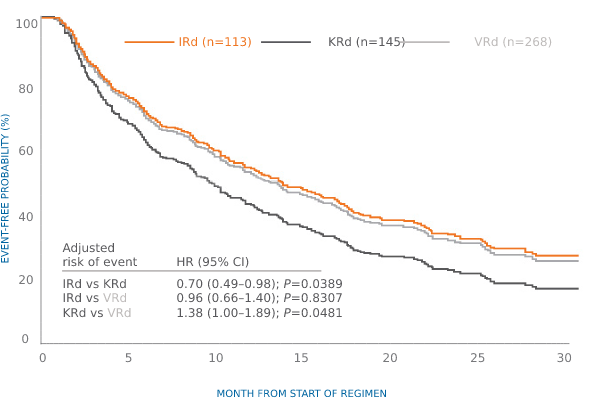

Chari et al. Optum’s EHR database, US Real-world study:
a retrospective, comparative efficacy analysis of PI-Rd
triplets used in routine care in the US1
Results:
Ixazomib (NINLARO) + Rd had a longer DOT (median 12.3 months
vs 7.2 months for KRd),
with a lower risk of discontinuation compared with KRd1
vs 7.2 months for KRd),
with a lower risk of discontinuation compared with KRd1
In adjusted* analysis, TTNT was comparable for all PI-Rd triplet combinations1
But TTNT was significantly longer with other PI-Rd combinations vs KRd in
patients with intermediate/frail modified frailty score1
patients with intermediate/frail modified frailty score1
Adjusted* TTNT by PI-Rd regimen in ≥2 lines of therapy1

Adjusted* TTNT by PI-Rd regimen in intermediate
to frail patients in ≥2 lines of therapy1

to frail patients in ≥2 lines of therapy1